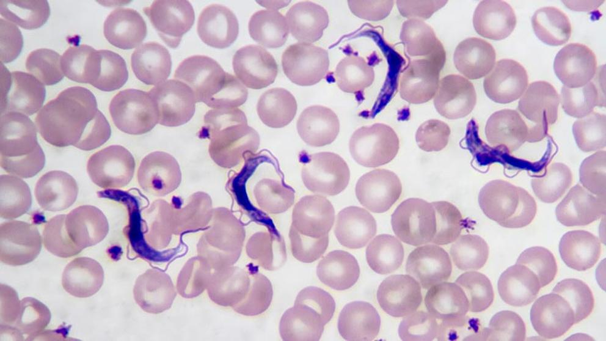

La tripanosomiasis africana humana (también conocida como enfermedad del sueño africana) es una enfermedad parasitaria transmitida por las moscas tsetsé del género Glossina y causada por un grupo de parásitos conocidos como tripanosomas. Esta enfermedad se encuentra en África ecuatorial y sigue una distribución irregular, dependiendo de la presencia de vectores y rasgos topográficos característicos. Lo cierto es que esta patología ha influido negativamente en el progreso económico y cultural del África subsahariana. De hecho, aproximadamente 60 millones de personas en 36 países están en riesgo de infección y la incidencia ha aumentado constantemente desde mediados de la década de 1960 hasta finales del siglo XX. No obstante, el aumento de la concienciación y la vigilancia han provocado una disminución del número de casos en los últimos años.
© Lucía Álvarez Núñez / CONTACTO